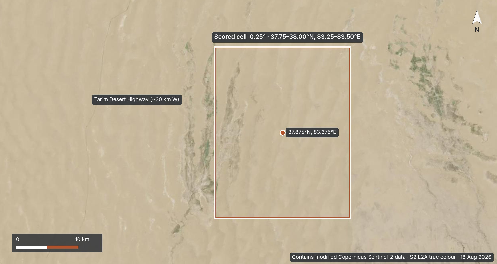

Case study 1 · Mars · Arcadia Planitia
Southern Taklamakan — Earth analog for Arcadia Planitia
Candidate site · cell centre 37.875°N, 83.375°E · southern edge of the Taklamakan Desert, Xinjiang, China · 1,258 m · analog for a Mars ice-drilling target
Scores measure distance from an identical twin, not a grade. For scale: the best known analog for Arcadia, the Qaidam Basin, scores 0.65 on the same scale.
Zoom map

Match: this cell vs Arcadia
| This cell | Arcadia | |
|---|---|---|
| Mean slope | 0.14° | 0.20° |
| Roughness | 18 m | 19 m |
| Albedo | 0.26 | 0.25 |
| Noon sun (yearly mean) | 52° | 50° |
| Rock | loose sediment | ice-rich sediment mantle |
| Rain | 18 mm/yr | none |
| Coldest night | 258 K | 163 K |
| Ground ice | none | yes, at 1–5 m |
Blue rows are where Earth can't match.
Good for
Flat-terrain rover and lander tests, and surface operations on plains that match Arcadia's slope, roughness, brightness and sun angle almost exactly.
Where it breaks
No ground ice, which is Arcadia's main resource. About 100 K warmer (258 K vs 163 K). Gravity, pressure and radiation can't be tested anywhere on Earth.
Prior analog work
No study found at this spot. Nearest published work: the NASA Ames–Chinese Academy of Sciences desert-microbe study at Ruoqiang, spring 2006, ~440 km east (Warren-Rhodes et al. 2007); ISRO's HOPE analog mission at Tso Kar, Ladakh, 705 km; Qaidam Basin yardangs as a Mars analog (Wang et al. 2018).
Access & permits
Altitude 1,258 m. Nearest town Minfeng, ~110 km SW. The Tarim Desert Highway passes ~30 km west of the cell centre (visible in the map). Fly to Yutian or Qiemo (~185 km), drive the highway, then go off-road across the dunes. The site is in China: field surveying by foreign teams needs state approval and a Chinese partner institution.
EMIT surface minerals
NASA EMIT has 49 mineral scenes over the cell (2023–2026). Band depths show only weak iron-oxide and clay/carbonate signals over the dunes, which points to sandy sediment, unlike Arcadia's basalt-derived surface.
Based on EMIT browse panels; individual mineral identifications still need the full L2B data files.
Nearest known analog
Tso Kar, Ladakh (ISRO), 705 km away. This cell is a candidate site, not a discovery.
Sources
- Imagery: Copernicus Sentinel-2 L2A, 18 Aug 2026, via the Copernicus Browser.
- Elevation: SRTM 90 m via OpenTopoData.
- EMIT: NASA CMR search for EMITL2BMIN granules over 83.25–83.50°E, 37.75–38.00°N.
- Scores and match values: Team Zenith engine, data v1.6. Distances are great-circle from the cell centre.